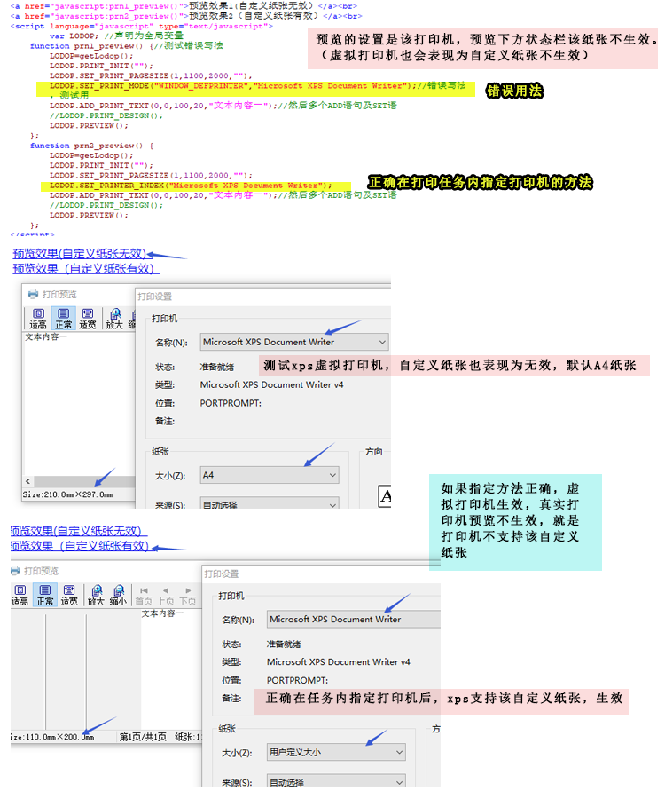

lodop一种导致自定义纸张无效的错误写法
代码设置了自定义纸张，预览下方状态栏先的不是设置的纸张，而是诸如A4纸张等默认纸张。且预览的设置里是该真实打印机预览的，这种现象一般是该打印机不支持自定义纸张导致的。
纸张设置，参考样例5 http://www.c-lodop.com/demolist/PrintSample5.html
用xps或pdf虚拟打印机测试一下（测试可用样例5），如果虚拟打印机输出的是正确的纸张，真实打印机不是，可能是打印机不支持该自定义纸张。 选择该真实打印机，在打印预览下方状态栏查看一下纸张大小，有的打印机不支持该自定义纸张。
样例5的步骤1输入尺寸，点预览，预览里切换不同打印机，该真实打印机不支持该自定义纸张尺寸，会不生效。
不过目前发现，也有一种错误写法，可能会导致支持该自定义纸张，预览却显示的是A4等默认尺寸，这种现象的原因是指定打印机错误导致的。
在打印任务内指定打印机语句，可用：
SET_PRINTER_INDEX(oIndexOrName);按序号或名称指定打印机，选定后禁止手工重选；
SET_PRINTER_INDEXA(IndexorName);按序号或名称指定打印机，选定后允许手工重选；
如果把指定windows默认打印机（样例5发步骤7）， LODOP.SET_PRINT_MODE("WINDOW_DEFPRINTER",打印机名称或序号);这种写到了和打印在一个任务里，误认为该语句是指定该打印任务的打印机语句，就会出现这种现象。
如果想用语句修改windows默认打印机，应和打印任务分成两个任务，控制不同的功能，例如样例7任务内指定打印机，样例5的步骤7里的单独操作windows默认打印机。
现象
预览的设置是该打印机，预览下方状态栏该纸张不生效。
（虚拟打印机也会表现为自定义纸张不生效）
现象原因
误认为LODOP.SET_PRINT_MODE("WINDOW_DEFPRINTER",打印机名称或序号);是在任务内指定打印机，写到了任务里，导致出现这个现象。
测试代码 ：
<script language="javascript" src="LodopFuncs.js"></script> <title>Document</title> </head> <body> <a href="javascript:prn1_preview()">预览效果1(自定义纸张无效）</a><br> <a href="javascript:prn2_preview()">预览效果2（自定义纸张有效）</a><br> <script language="javascript" type="text/javascript"> var LODOP; //声明为全局变量 function prn1_preview() {//测试错误写法 LODOP=getLodop(); LODOP.PRINT_INIT(""); LODOP.SET_PRINT_PAGESIZE(1,1100,2000,""); LODOP.SET_PRINT_MODE("WINDOW_DEFPRINTER","Microsoft XPS Document Writer");//错误写法，测试用 LODOP.ADD_PRINT_TEXT(0,0,100,20,"文本内容一");//然后多个ADD语句及SET语 //LODOP.PRINT_DESIGN(); LODOP.PREVIEW(); }; function prn2_preview() { LODOP=getLodop(); LODOP.PRINT_INIT(""); LODOP.SET_PRINT_PAGESIZE(1,1100,2000,""); LODOP.SET_PRINTER_INDEX("Microsoft XPS Document Writer"); LODOP.ADD_PRINT_TEXT(0,0,100,20,"文本内容一");//然后多个ADD语句及SET语 //LODOP.PRINT_DESIGN(); LODOP.PREVIEW(); }; </script> </body>
图示：
